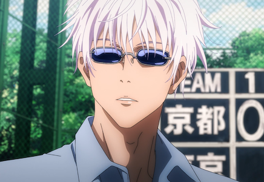
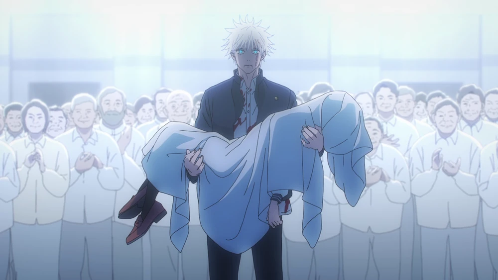
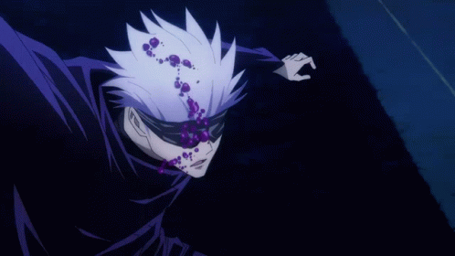
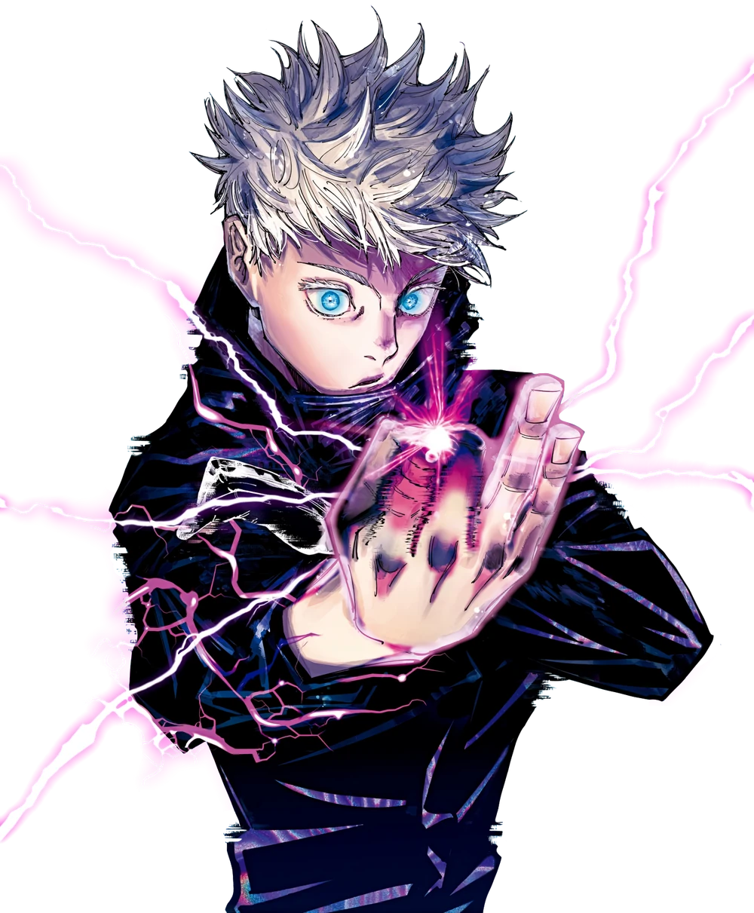
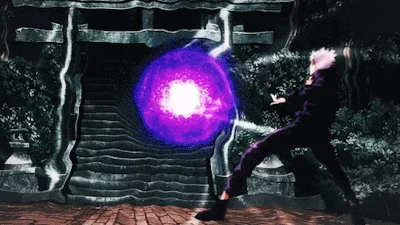

Gojo Satoru
Character
Gojo Satoru is one of the main protagonists of the Jujutsu Kaisen series. He is a special grade jujutsu sorcerer and widely recognized as the strongest in the world. Satoru is the pride of the Gojo Family, the first person to inherit both the Limitless and the Six Eyes in four hundred years. He works as a teacher at the Tokyo Jujutsu High and uses his influence to protect and train strong young allies.
Appearance
Satoru is a very tall, lean and muscular man who is in his late twenties. He has snow-white hair and the Six Eyes, which are a vibrant blue color. Satoru normally covers his eyes with a black blindfold which props up his hair and gives it a spikier appearance. When sporting a more casual look, Satoru will wear sunglasses and let his hair down to reach the base of his neck.
Personality
Gojo is extremely confident in his abilities and reputation as a powerful sorcerer, believing himself to be invincible. Additionally, greatly influenced by his own desire for power, he is very arrogant.
He is convinced that he is the strongest in the world, which he technically is, claiming, during his
fight with Toji Fushiguro, that throughout the Heavens and earth, he alone is the honored
one.

Furthermore, Gojo was later left visibly horrified and panicked after learning that Geto, his one and only best friend, had become a murderous curse user. Gojo attempted to reason with his friend, but eventually realized and accepted that he lost the one person he truly saw as an equal. After having to put an end to Geto before more calamity arose, it was Gojo's trauma over losing his best friend that caused his ultimate downfall in Shibuya.
Gojo's endgame is to reform the jujutsu world from the bottom-up through education. He seeks to foster a new generation of sorcerers that he hopes will one day become his equals.
Abilities and Powers
Overall Skill Level
Even among the special grade sorcerers, Gojo is known to be the strongest sorcerer in the series, holding both immense amounts of cursed energy and a dangerously powerful technique. No one can seemingly match his skill level in the current storyline, except for the King of Curses, Sukuna.
A short guide to Gojo's Jujutsu
Immeasurable Cursed Energy
Gojo is known within the jujutsu society as the strongest jujutsu sorcerer in the world. He earned this alias due to the immense amounts of cursed energy he possesses. His cursed energy is vast enough to use a Domain Expansion at least five times in one day, while most sorcerers can only use it once.
Inherited Technique
Limitless (無む下か限げん Mukagen)

At the base level, Limitless is an innate technique which is derived from the Gojo family. This technique grants its users nigh-absolute control over space through cursed energy manipulation at an atomic level, resulting in multiple subsequent results and techniques within the overall ability. With the manipulation of space as just the base level of the technique, Limitless has three standard and one "non-standard" form beyond this.
Hollow Technique: Purple (虚式「茈」Kyoshiki・Murasaki)
An advanced technique that collides the Lapse and Reversal of the Limitless, resulting in an imaginary mass that is launched at the target.
Unlimited Void (無量空処 Muryōkūsho)
Satoru's Domain Expansion. It creates a metaphysical space that causes the victims to receive all kinds of stimuli and information endlessly, restraining their thought processes and actions. Those he makes physical contact with are also immune to its effect.
Gojo's 0.2 second Domain Expansion
Six Eyes (六眼 Rikugan)

Not much is known about the Six Eyes, but it is known that they play some role in the precise usage of the Limitless. It has been stated that similar to Limitless, Six Eyes is also an Innate Technique inherited through the Gojo family. Yuta has stated that the Six Eyes allows Satoru to reduce his cursed energy consumption from technique activation infinitesimally near to nothing, and that he will never run out of cursed energy in a fight as a result.